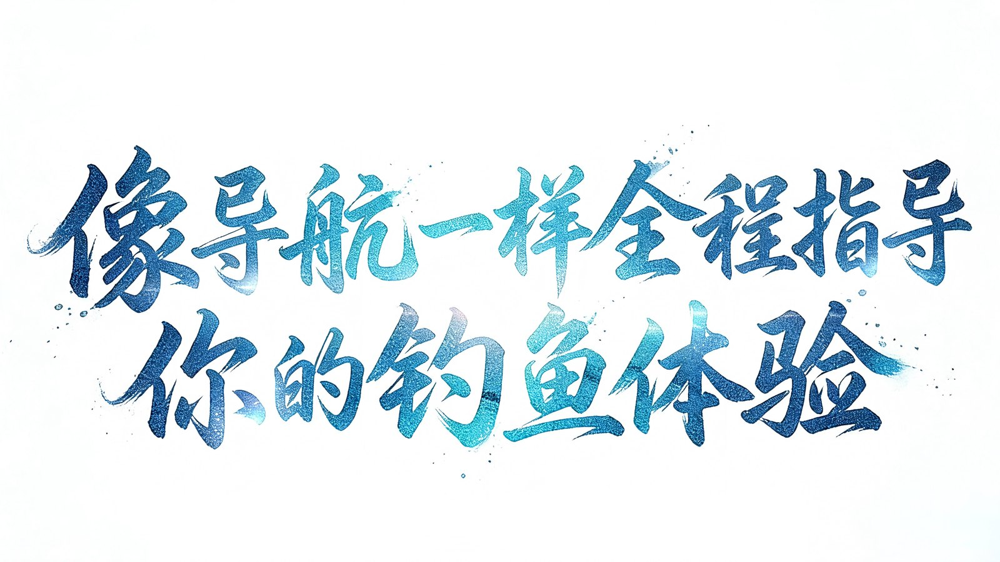
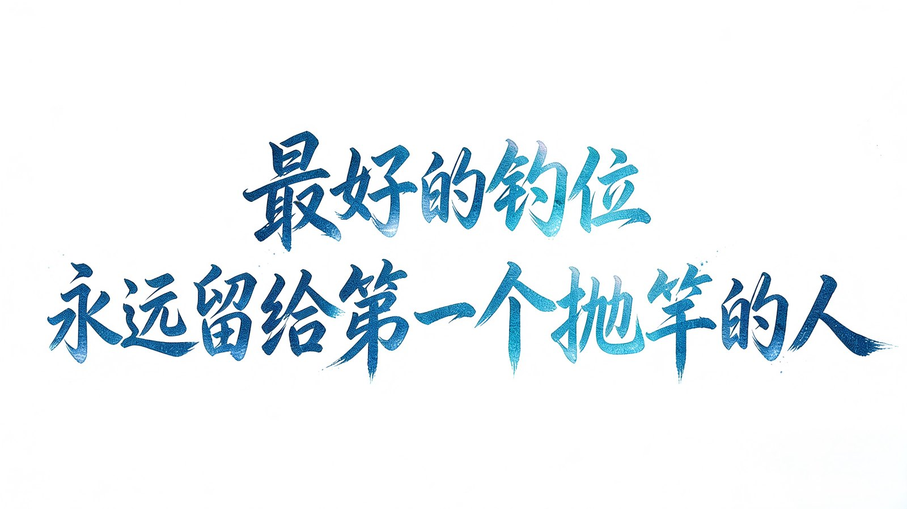
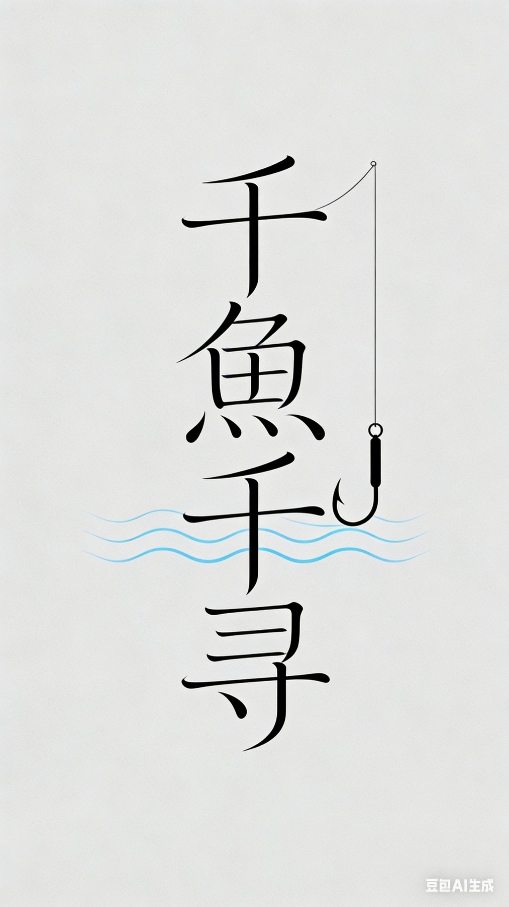

01PYTHON
千鱼千寻 · AI 钓鱼参谋
ANGLING AI
可解释的智能垂钓决策助手：鱼情指数、钓点地图、钓获记录三段式工作流，给建议的同时说明依据。
OPEN SOURCE · GITHUB PAGES
四组可运行的实践。全部无后端、无密钥，点开即用；代码与演示分别有独立入口。
Repositories2026.11
ANGLING AI
可解释的智能垂钓决策助手：鱼情指数、钓点地图、钓获记录三段式工作流，给建议的同时说明依据。
NUTRITION AGENT
本地优先的饮食记录与周复盘：一句话记餐、规则化估算与提醒，零依赖，原生 ES Modules。
FRIEND ATLAS
本地优先的社交数据可视化：中国地图下钻、关系网络与统计分析，无构建步骤。
AXA PORTFOLIO
这套作品集本身：静态多页站点，内容与构建脚本同仓，二维码、字体等资源全部本地化。
Archive · 千鱼千寻品牌素材 / 2026


